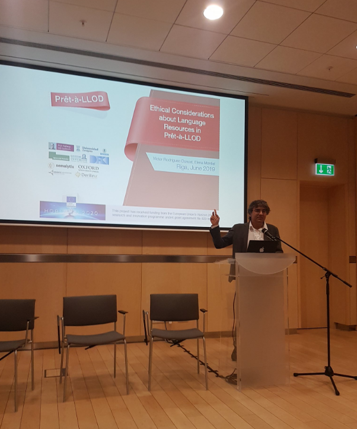

During the BDV PPP meetup in Riga (Latvia) held in June 2019, Víctor Rodríguez-Doncel from Universidad Politécnica de Madrid presented the Prêt-à-LLOD project. In particular, he focused on the ethical considerations to be made when massively managing language resources. Making language resources ready-to-use unleashes new powers that have to be tamed for the general good --the eSides community was consulted in this fruitful session.
